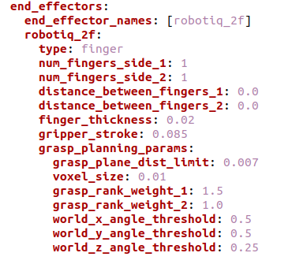
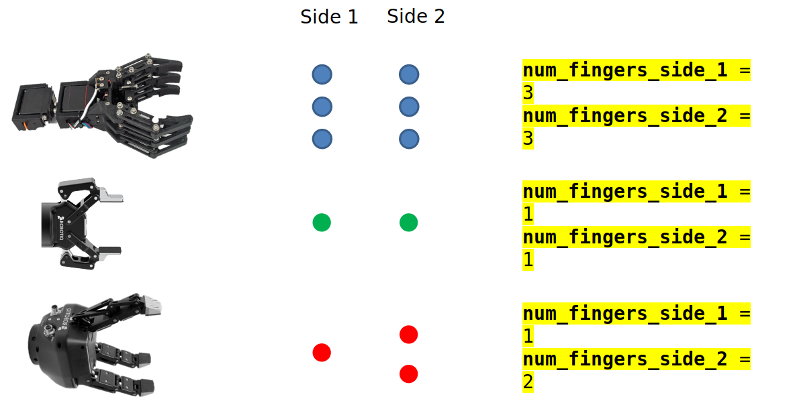
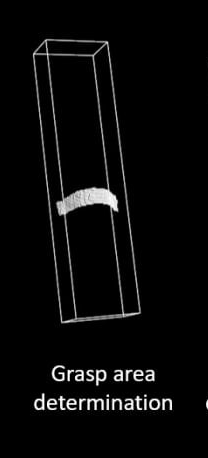
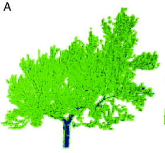
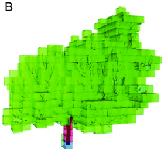
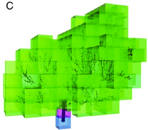
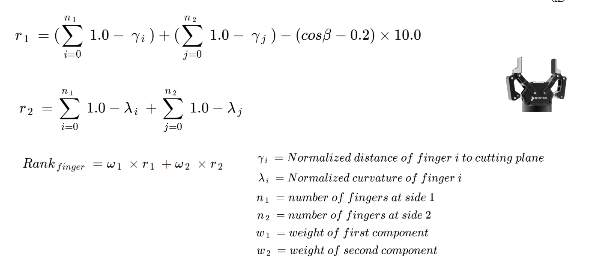

Finger Gripper¶
The parameters for Finger Gripper end effectors are as follows:
Parameter |
Description |
|---|---|
end_effector_names |
Name of end effector |
Replace ``robotiq_2f`` with Name of end_effector |
|
type |
finger |
num_fingers_side_1 |
Number of fingers on left side (Shown in Figure 1) |
num_fingers_side_2 |
Number of fingers on right side (Shown in Figure 1) |
distance_between_fingers_1 |
Distance between each finger on left side (Shown in Figure 2) |
distance_between_fingers_2 |
Distance between each finger on right side (Shown in Figure 2) |
finger_thickness |
Thickness of a single finger (Shown in Figure 2) |
gripper_stroke |
Distance of between fingers on opposite ends (Shown in Figure 2) |
grasp_plane_dist_limit |
Determine the thickness of the grasp area sampled. |
voxel_size |
Determine the leaf size during point cloud down sampling |
grasp_rank_weight_1 |
Part of Grasp Planner Ranking formula (Default value) |
grasp_rank_weight_2 |
Part of Grasp Planner Ranking formula (Default value) |
world_x_angle_threshold |
(Default value) |
world_y_angle_threshold |
(Default value) |
world_z_angle_threshold |
(Default value) |
Note
The line right after end_effector_names requires you to input the name of the end_effector specified.
Determining
num_fingers_side_1andnum_fingers_side_2parameters are shown in Figure 1 below.
Figure 1 |
|---|
 |
Determining
distance_between_fingers_1,distance_between_fingers_2,finger_thicknessandgripper_strokeparameters are shown in Figure 2 below.
Figure 2 |
|---|
|

grasp_plane_dist_limit
Determine the thickness of the grasp area sampled.
Smaller plane distance results in less points considered during grasp planning, resulting in faster planning times, but possibly less accurate grasp plans
Larger plane distance results in more points considered during grasp planning, resulting in lower planning times, but possibly more accurate grasp plans
voxel_size
Determine the leaf size during point cloud down sampling
Small voxel sizes means higher number of points after downsampling, resulting in slower grasp planning time, but possible more accurate grasp plans
Large voxel sizes means smaller number of points after downsampling, which may result faster planning time, but lower accuracy of grasp plans due to the lack of points
Voxel Sizes |
||
|---|---|---|
Small |
Medium |
Large |
 |
 |
 |
Grasp Planning Metric (Finger)¶
Every possible grasps on the object are ranked by utlizing this formula. The position and orientation of the best quality grasp is then published for ref::grasp_execution_demo.